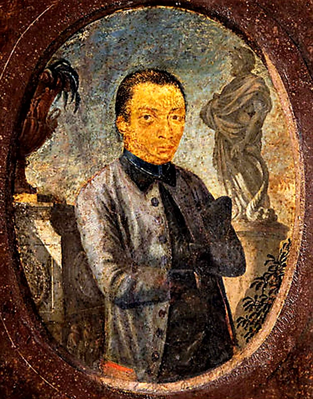
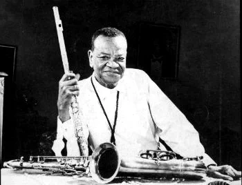
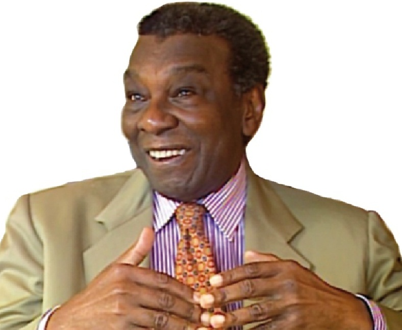
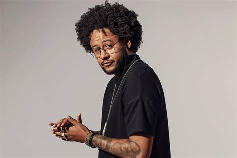

personalidades nacionais
ZUMBI DOS PALMARES

Zumbi dos Palmares (1655-1695) foi o último líder do Quilombo dos Palmares e também o de maior relevância histórica.
Zumbi ganhou respeito e admiração de seus compatriotas quilombolas devido suas habilidades como guerreiro, a qual lhe conferia coragem, liderança e conhecimentos de estratégia militar.
Lutou pela liberdade de culto e religião, bem como pelo fim da escravidão colonial no Brasil. Apesar disso, este líder também ficou conhecido pela severidade despótica com que conduzia Palmares, onde, inclusive, havia um tipo mais brando de escravidão.
De todas as maneiras, não admitia a dominação dos brancos sobre os negros e, portanto, tornou-se o maior símbolo pela liberdade dos negros da história brasileira.
ALEIJADINHO
Filho de um arquiteto português e de sua escrava, Antônio Francisco de Lisboa, o Aleijadinho, foi alforriado pelo pai. Cresceu num ambiente de arte e pôde receber educação formal junto aos seus meios-irmãos.
Sendo pardo ou mulato nem sempre recebia o que lhe correspondia por suas obras e muitas peças não podem ter a autoria confirmada por carecerem de contrato.
Mesmo assim foi encarregado de realizar várias peças importantes para as ordens religiosas mais ricas da região das Minas Gerais. Suas obras estão em cidades como Congonhas, Mariana e Sabará e em vários museus brasileiros.
Desenvolveu uma doença degenerativa que o fez perder (ou paralisar) os dedos das mãos e dos pés. Mesmo gravemente enfermo não parou de trabalhar e imprimiu às suas criações um estilo inconfundível, sendo reconhecido como grande mestre barroco do período.
PIXINGUINHA
Pixinguinha, apelido de Alfredo da Rocha Vianna Filho, é considerado o maior flautista brasileiro, e ainda tocava cavaquinho, piano e saxofone. Começou a aprender música em casa e, aos 14 anos, já se apresentava em casas noturnas.
Na época do cinema mudo, os artistas negros não eram contratados para as orquestras que acompanhavam o filme, nem tocavam no hall do cinema.
No entanto, com a gripe espanhola, Pixinguinha consegue convencer um produtor a contratar o seu conjunto “Os Oito Batutas” , integrado somente por músicos negros. O grupo animaria os espectadores antes das projeções dos filmes.
Mais tarde “Os Oito Batutas” excursionam pela Europa por seis meses e voltam triunfantes.
Pixinguinha vai para o rádio onde escreve arranjos e conhece os grandes cantores da época, como Orlando Silva, que gravaria “Carinhoso”. Suas canções até hoje estão no repertório dos grupos de choro, samba e MPB, pois ele é considerado o fundador da moderna música brasileira.
MILTON SANTOS
O maior geógrafo do Brasil ficou conhecido internacionalmente e chegou a dar aulas em uma série de universidades estrangeiras.
Milton Santos nasceu na Bahia e, como era filho de professores, começou a dar aulas desde cedo, ainda com 13 anos. Depois de se formar em direito, fez doutorado na área que sempre despertou a sua paixão: a geografia.
Durante a ditadura militar foi perseguido no Brasil e se exilou na França. Reconhecido pelo seu trabalho, Milton Santos recebeu o título de doutor honoris causa por mais de 20 instituições no Brasil e no exterior.
Ele foi também o único brasileiro a receber o prêmio Vautrin Lud (o Nobel da Geografia), em 1994.
EMICIDA
O rapper, cantor, letrista, compositor, apresentador e empresário paulistano é considerado uma das maiores revelações do hip hop do Brasil da década de 2000.
Nascido no Tucuruvi e criado em um bairro bastante humilde da Zona Norte de São Paulo, o Jardim Fontalis, Emicida passou uma infância de dificuldades, ao lado da mãe – Dona Jacira, grande inspiração – das duas irmãs mais velhas e do irmão mais novo, Evandro Fióti, que também é músico, produtor, e hoje é seu sócio e empresário.